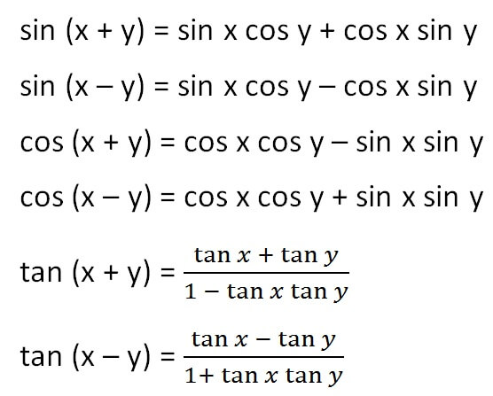
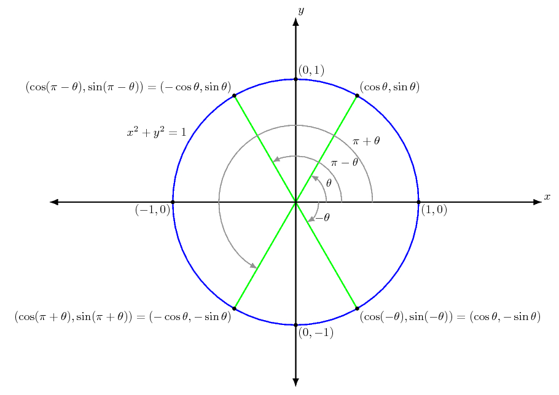

Algebra 10: Week 2
Aidin Biibosunov
Created: 2024-09-09 Mon 20:50
1. Lesson 1: Trigonometry cont.
- Вывести сумму углов
- Примеры
- Задачи
- Үй тапшырмасы
1.1. Кошумча формула


### Тема 3: Кошуу формулалары
- Маселе: \( \sin(45^\circ + 30^\circ) \) маанисин тапкыла.
- Чечүү: Синустун кошуу формуласы колдонулат: \( \sin(\alpha + \beta) = \sin \alpha \cos \beta + \cos \alpha \sin \beta \).
- Маселе: \( \cos(60^\circ + \theta) \) ни \( \cos \theta \) жана \( \sin \theta \) аркылуу чыгарыңыз.
- Чечүү: Косинустун кошуу формуласы колдонулат: \( \cos(\alpha + \beta) = \cos \alpha \cos \beta - \sin \alpha \sin \beta \).
—
### Тема 4: Эки эсе бурч формулалары
- Маселе: \( \sin 2\alpha \) маанисин табыңыз, эгерде \( \sin \alpha = \frac{1}{2} \) болсо.
- Чечүү: Формуланы колдонуңуз \( \sin 2\alpha = 2 \sin \alpha \cos \alpha \).
- Маселе: \( \cos 2\alpha \) маанисин табыңыз, эгерде \( \tan \alpha = 1 \) болсо.
- Чечүү: Формуланы колдонуңуз \( \cos 2\alpha = \cos^2 \alpha - \sin^2 \alpha \) жана тригонометриялык функциялардын байланышын колдонуңуз.
—
### Тема 5: Сумма жана айырма формулалары
- Маселе: \( \sin(75^\circ - 30^\circ) \) маанисин табыңыз.
- Чечүү: Синустун айырмасы үчүн формула колдонулат: \( \sin(\alpha - \beta) = \sin \alpha \cos \beta - \cos \alpha \sin \beta \).
- Маселе: \( \tan(\theta - 45^\circ) \) ни \( \tan \theta \) аркылуу чыгарыңыз.
- Чечүү: Тангенстин айырмасы үчүн формула колдонулат: \( \tan(\alpha - \beta) = \frac{\tan \alpha - \tan \beta}{1 + \tan \alpha \tan \beta} \).
—
### Тема 6: Келтирүү формулалары
- Маселе: \( \sin(180^\circ - \alpha) \) ни \( \sin \alpha \) аркылуу чыгарыңыз.
- Чечүү: Келтирүү формуласы колдонулат: \( \sin(180^\circ - \alpha) = \sin \alpha \).
- Маселе: \( \cos(90^\circ + \alpha) \) маанисин \( \sin \alpha \) аркылуу чыгарыңыз.
- Чечүү: Келтирүү формуласы колдонулат: \( \cos(90^\circ + \alpha) = -\sin \alpha \).
—
### Тема 7: Тригонометриялык өрнөктөрдү жөнөкөйлөтүү
- Маселе: \( 2 \sin^2 \alpha + \cos 2\alpha \) деген өрнөктү жөнөкөйлөтүңүз.
- Чечүү: Косинустун эки эсе бурч формуласы жана негизги тригонометриялык теңдик колдонулат.
- Маселе: \( \frac{1 - \sin 2\alpha}{\cos^2 \alpha} \) деген өрнөктү жөнөкөйлөтүңүз.
- Чечүү: Эки эсе бурч формулалары жана тригонометриялык функциялардын байланышын колдонуңуз.
1.1.1. Сабактын жыйынтыгы (5 мүнөт)
1.1.2. Үй тапшырмасы
#### Тема 3: Кошуу формулалары
- \( \sin(30^\circ + 45^\circ) \) жана \( \cos(30^\circ + 45^\circ) \) маанилерин кошуу формулалары аркылуу табыңыз.
- \( \cos(90^\circ - \theta) \) ни \( \sin \theta \) аркылуу чыгарыңыз.
#### Тема 4: Эки эсе бурч формулалары
- \( \sin 2\alpha \) маанисин табыңыз, эгерде \( \cos \alpha = \frac{\sqrt{3}}{2} \).
- \( \cos 2\alpha \) ни чыгарыңыз, эгерде \( \sin \alpha = \frac{3}{5} \).
#### Тема 5: Сумма жана айырма формулалары
- \( \cos(60^\circ - 45^\circ) \) маанисин айырма формуласы менен табыңыз.
- \( \tan(90^\circ - \theta) \) ни тригонометриялык функциялар аркылуу чыгарыңыз.
#### Тема 6: Келтирүү формулалары
- \( \sin(270^\circ + \alpha) \) ни \( \sin \alpha \) же \( \cos \alpha \) аркылуу чыгарыңыз.
- \( \cos(360^\circ - \alpha) \) маанисин табыңыз.
#### Тема 7: Тригонометриялык өрнөктөрдү жөнөкөйлөтүү
- \( \sin(2\alpha) \cdot \cos(2\alpha) \) деген өрнөктү жөнөкөйлөтүңүз.
- \( 1 - 2 \sin^2 \alpha \) дегенди тригонометриялык теңдиктерди колдонуп жөнөкөйлөтүңүз.
Кошумча тапшырмалар:
- Эки эсе бурч формулаларын колдонуп, өз алдынча эки мисал түзүп, чечиңиз.
- \( \sin 2\alpha = \cos \alpha \) деген теңдемени 0 градустан 180 градуска чейинки бурчтар үчүн чечиңиз.

1.1.3. Шилтемелер
—